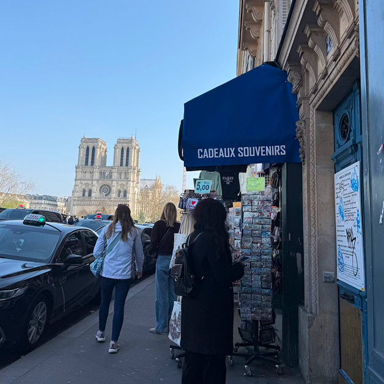
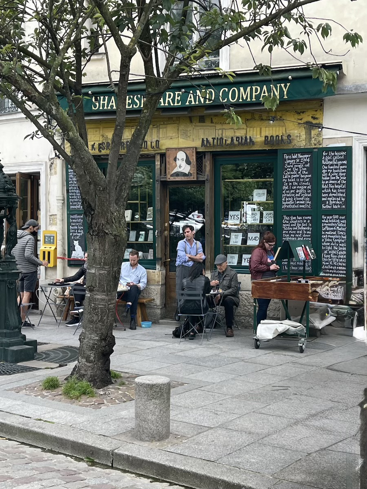
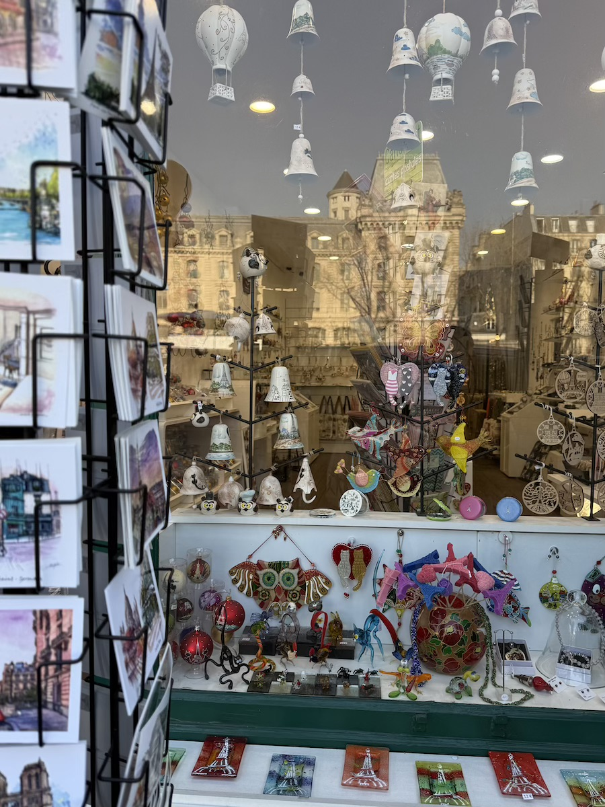
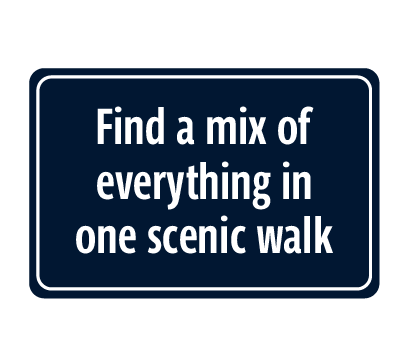
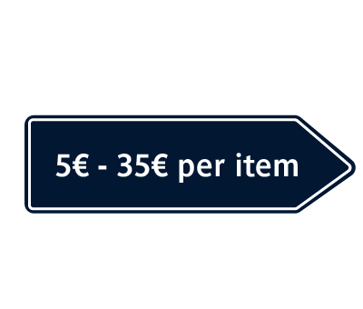
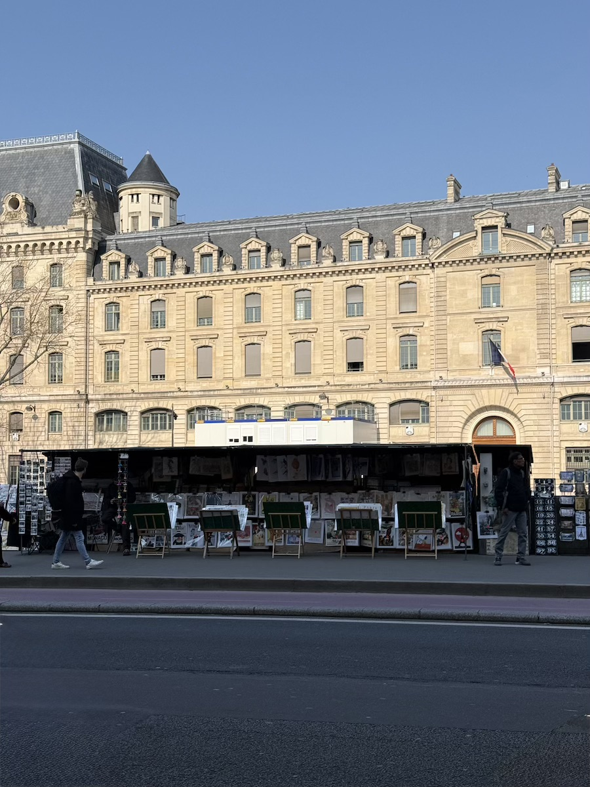

Open around 10am
Close around 7:30pm



If you want the most iconic Parisian shopping experience possible, you have to head to the 5th Arrondissement to walk along Quai Saint-Michel. This is one of my favorite places to bring friends and family because you’re literally right across the Seine from Notre Dame. The vibe check here is 10/10. You have the historic green "Bouquinistes" stalls lining the river, mixed with permanent souvenir shops and legendary spots like Shakespeare & Co. just a few steps away. It’s the street I go to when I want a souvenir that feels like a piece of history.
Staff friendliness: Generally good, though it can get busy and crowded since it’s such a major landmark area. The shopkeepers are very used to travelers from all over, so they’re efficient and usually speak great English. Sometimes they even love to get to know where you’re from.
Store Variety: It isn’t just plastic trinkets. You can find beautiful vintage posters, rare books, and unique stationery alongside the classic 1€ keychains. The products here feel a bit more artistic, which I think makes for better gifts for people back home who want something a little more special.
Store Size: In terms of store sizes, most of these shops are tucked into beautiful, narrow historic buildings. They can be a bit tight to navigate, but that’s part of souvenir shopping in Paris sometimes.
Prices: The prices can vary. You can definitely find budget-friendly deals if you stick to the smaller stalls, but the shops closer to the main bridge might be a bit more expensive. There are a lot of permanent shops here, not even counting the dozens of outdoor stalls along the water. Sometimes if you buy a bulk of items they might give you a discount or even a few free things!



